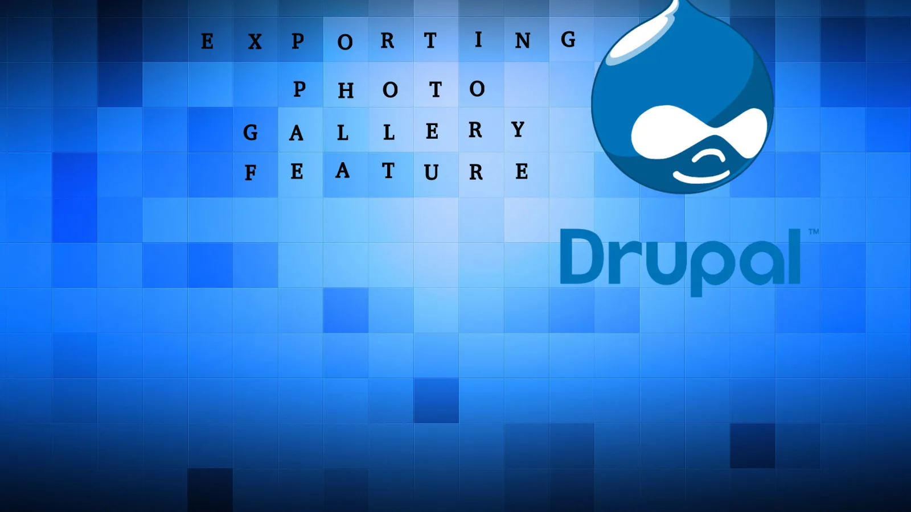
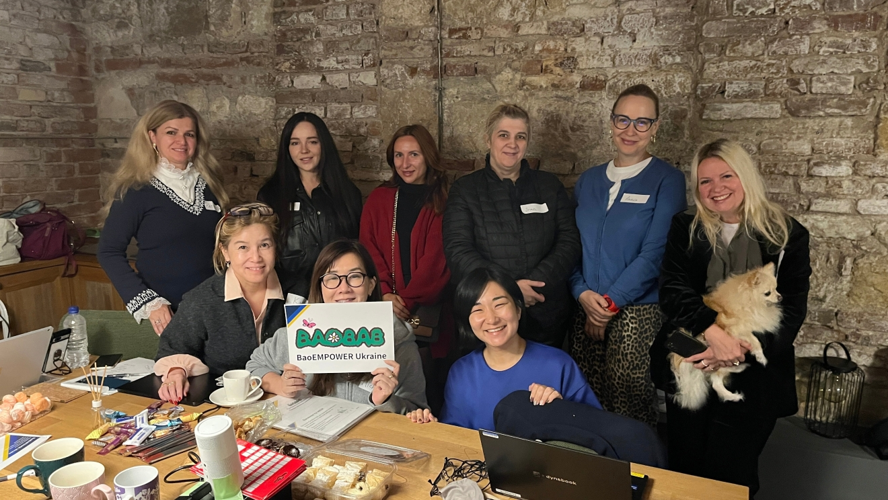
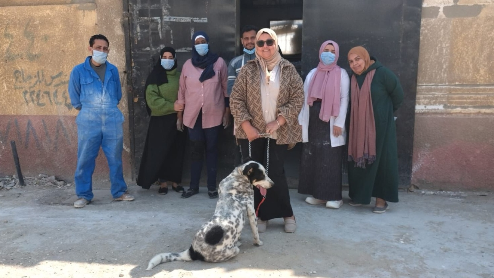

Drupal became an open source project in 2001.Interest in Drupal got a significant boost in 2003 when it helped build "DeanSpace" for Howard Dean, one of the candidates in the U.S. Democratic Party's primary campaign for the 2004 U.S. presidential election. DeanSpace used open-source sharing of Drupal to support a decentralized network of approximately 50 disparate, unofficial pro-Dean websites that allowed users to communicate directly with one another as well as with the campaign development.

"We would also like to acknowledge that we are conducting an investigation into the incident, and we may not be able to immediately answer all of the questions you may have," Ross wrote. "However, we are committed to transparency and will report to the community once we have an investigation report.A scan for additional malware following the initial discovery has not detected any other issues, Ross said. Attackers targeted a known, publicly disclosed vulnerability in third-party software installed on the Drupal.org server infrastructure. It was not a result of a vulnerability within Drupal.
Drupal, the popular open-source content management system used by hundreds of thousands of blogs and websites, has reset the passwords of its Drupal.org users following a data security breach of the company's servers.The company's security team is still investigating the incident and hasn't yet determined the scope of the problem, according to a message to Drupal users posted on its forum announcement page. User account data stored on Drupal.org and groups.drupal.org had been exposed in the breach, wrote Holly Ross, executive director of the Drupal Association.
Drupal is a popular open-source platform used for creating and managing websites. It is built using PHP and is known for its flexibility and powerful features. Drupal helps users easily add, edit, and organize website content. It offers a wide range of modules and themes for customization. Many organizations use Drupal for business, education, and government websites. It provides strong security and supports multiple languages. Overall, Drupal is a reliable and efficient tool for building modern websites.Drupal is an open-source CMS used to create and manage websites easily.
The base of Drupal is known as Drupal core, which contains basic features common to content-management systems. These include user account registration and maintenance, menu management, RSS feeds, taxonomy, page layout customization, and system administration. The Drupal core installation can serve as a simple website, a single or multi-user blog, an Internet forum, or a community website providing for user-generated content.
Drupal became an open source project in 2001.Interest in Drupal got a significant boost in 2003 when it helped build "DeanSpace" for Howard Dean, one of the candidates in the U.S. Democratic Party's primary campaign for the 2004 U.S. presidential election. DeanSpace used open-source sharing of Drupal to support a decentralized network of approximately 50 disparate, unofficial pro-Dean websites that allowed users to communicate directly with one another as well as with the campaign development.